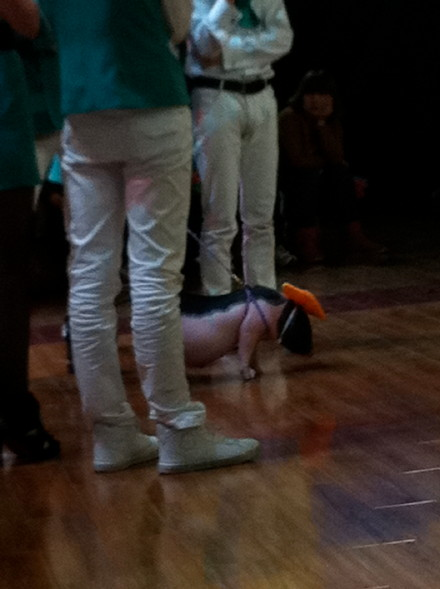

昨天又一次录制浙江卫视快乐蓝天下，上次的猜美女职业的环节让我很难忘，感谢那位驯兽师让我第一次与蛇共舞，记得当时的场面是所有人都不敢靠近甚至有些嫌弃这条蛇，除了蟒蛇的主人，当时我也有点紧张但是真的很想和它互动，就要求主人把蟒蛇绕在我身上，小的时候不懂，还吃过蛇肉，现在越来越觉得我们都是同类，忏悔也来不及了，所以现在几乎都不吃肉了，既然那次让我遇上了蛇，我在靠近它的之前就想好，如果他感觉到我吃过它想为兄弟姐妹报酬，那它真的要咬我也只能让他咬了，我愿意也应该...我走向了它，不过驯兽师还是做了措施把蛇的嘴暂时封起来，蟒蛇很友好，我真的觉得它有感觉到我有忏悔知心，所以给我机会...其实那么大一条缅甸蟒蛇绕在我身上，它真的要缠死我也没有人能阻止的了吧，所以我很感谢这条蛇的不杀之恩，希望我们人类不要再杀这个杀那个的了，少繁殖点人倒是真的，早日放下屠刀忏悔也许还是来得及的...
这次的猜美女职业环节又来一位称自己是“猪司令”的美女，意思就是猪饲养员，她牵了一头超级无敌可爱的小香猪（小美）上台，我当然又很兴奋的和小美互动了一下，当时就想，不管她是真的还时假的，都让人心寒...
我写这篇博文的主要目的是要谢谢小美，因为昨天节目ending的时候，各位主人非常热情和贴心的答谢了现场的观众和我们三位嘉宾和所有的工作人员，但就是忘记谢谢小美了，我替小美觉得委屈，大家是都很辛苦，一早就开始弄舞台什么的，灯光导演阿乐队阿，观众阿...但是小美也很早到现场了呀，虽然小美不能说话，但是小美都懂的，本来在家里呆着好好的，莫名其妙脖子上被套跟绳子也就算了，还绑那么大个蝴蝶结，重也重死了，连声谢谢都没有听到就又被莫名其妙牵回去了，昨晚自从小美下了台，我根本就无心录节目，我在想小美头上的蝴蝶结是被解开的呢？还是被扯开的？又想小美是怎么回家坐什么车？坐专车还是冰冷的货车？小美是被包上车的？还是被抛上车的？5555不知道昨天在现场的人有没有也和我一样惦记着小美的，小美把大家都逗欢乐了，最终大家又会怎么对待它呢谢谢小美，我们错了
小美任劳任怨...
